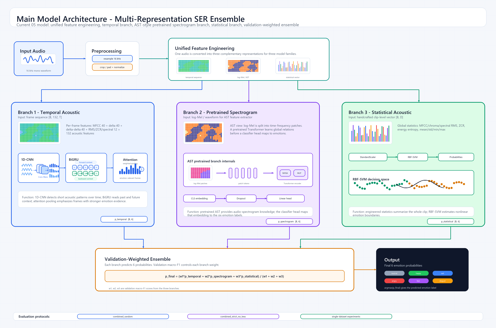

Main Model Architecture - Multi-Representation SER Ensemble
Report-ready diagram with 1D-CNN, BiGRU, attention, AST pretrained branch, statistical RBF-SVM branch, and validation-weighted ensemble.

Report-ready diagram with 1D-CNN, BiGRU, attention, AST pretrained branch, statistical RBF-SVM branch, and validation-weighted ensemble.
